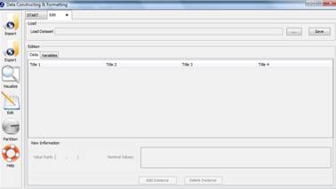
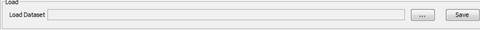
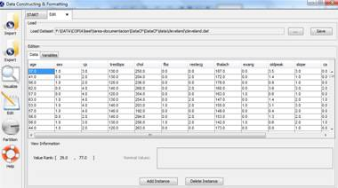
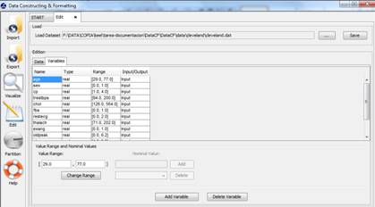

EDIT DATA
Edit data allows you to edit any existing KEEL format data sets in order to add new attributes, to delete others, to correct some errors, etc.

Figure 1. Process of Editing Data.
Figure 1 shows the main window of this option. First of all, you must select the path of source data set (in KEEL format) that you want to edit (see Figure 2).

Figure 2. Load Dataset to edit its content.
Once the file is loaded, its content appears on the table. The modifications could be carried out both in instances and in variables. In following, the two options are shown.
Option 1: Data Edition. In this option new instances could be added or existing instances could be deleted or modified (see Figure 3).

Figure 3. Data Edition.
Using the table and the buttons situated over it you can perform the next operations:
- Modify the cell content: if you want to modify the cell content you have to click on the cell that you want to change. Then, you only have to write the new value, and if it is valid, the cell content is modified. Otherwise an error dialog is shown.
- Delete an instance: if you want to delete an instance, you have to click on any cell which corresponds with the instance (row) that you want to delete. Then, a “Delete Instace” button is activated. When you click on it, the full instance will be deleted.
- Add a new instance: if you want to add a new instance, you have to click the “Add Instance” button. Then, a new instance is added, if a cell was selected, the new instance is added at top of the instance where you had the cell selected. If no cell was selected, a new instance is added at the bottom of the table. The new instance has empty values and the different variables can be filled out clicking on the different cells.
Option 2: Variable Edition. In this option different modifications on the variables can be carried out (see Figure 4).

Figure 4. Variable Edition.
Using the table and the buttons situated over it you can perform the next operations:
- Add new variables: if you want to add new variables, the “Add Variable” button has to be clicked on. Then, a new row is added to the bottom of the table and the different features can be filled out.
- Add new variables: if you want to delete a variable, first a variable has to be selected and then the “Delete Variable” button has to be clicked.
- Change the rank values: if you want to change the rank values, a real or integer variable has to be selected. If the variable selected is "Integer" or "Real", you can modify the rank values and then click on “Change Range” button to change the information.
- Change nominal values: if you want to change the nominal values, a nominal variable has to be selected. If the variable selected is nominal, you can add or remove the values allowed for that variable using the list and “Delete” and “Add” button.
- Change attribute type: if you want to change the variable type, you have to click on the cell that you want to change of “Type” column. Then, you can modify the variable type by means of the list specifying any other type.
- Change attribute 'function': if you want to change the attribute function, you have to click on the cell that you want to change of “Function” column. Then, you can modify the variable 'function' by means of the list specifying if it is "input" or "output".
When you have made all the changes, you can save them to a file pressing the "Save" button.